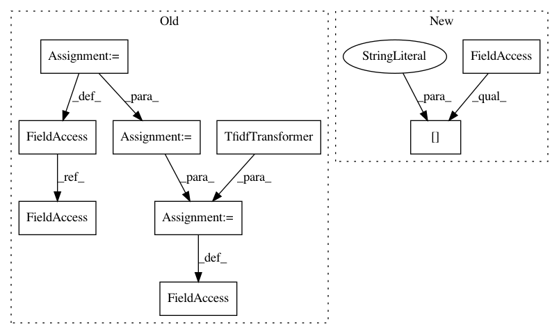

99973b2eb7ee37508b81154154652ab282ea061d,classifier.py,,,#,127
Before Change
// f1-Score: 0.702651511011
//=========================================================================================
count_vect = CountVectorizer()
X_train_counts = count_vect.fit_transform(DataPrep.train_news["Statement"].values)
tf_transformer = TfidfTransformer(use_idf=False).fit(X_train_counts)
X_train_tf = tf_transformer.transform(X_train_counts)
Usinng n-grams, stopwords etc
After Change
print(classification_report(DataPrep.test_news["Label"], predicted_LogR_ngram))
print(classification_report(DataPrep.test_news["Label"], predicted_svm_ngram))
print(classification_report(DataPrep.test_news["Label"], predicted_sgd_ngram))
print(classification_report(DataPrep.test_news["Label"], predicted_rf_ngram))
DataPrep.test_news["Label"].shape
In pattern: SUPERPATTERN
Frequency: 3
Non-data size: 9
Instances
Project Name: nishitpatel01/Fake_News_Detection
Commit Name: 99973b2eb7ee37508b81154154652ab282ea061d
Time: 2017-12-10
Author: nkp3@illinois.edu
File Name: classifier.py
Class Name:
Method Name:
Project Name: nishitpatel01/Fake_News_Detection
Commit Name: 3b49ffd98696ad697cf2b9685e581459d51ea0b1
Time: 2017-12-03
Author: nkp3@illinois.edu
File Name: FeatureSelection.py
Class Name:
Method Name:
Project Name: nishitpatel01/Fake_News_Detection
Commit Name: 95b8e2a603f66cc3091e3266a717c0f206be3e95
Time: 2017-12-03
Author: nkp3@illinois.edu
File Name: FeatureSelection.py
Class Name:
Method Name: